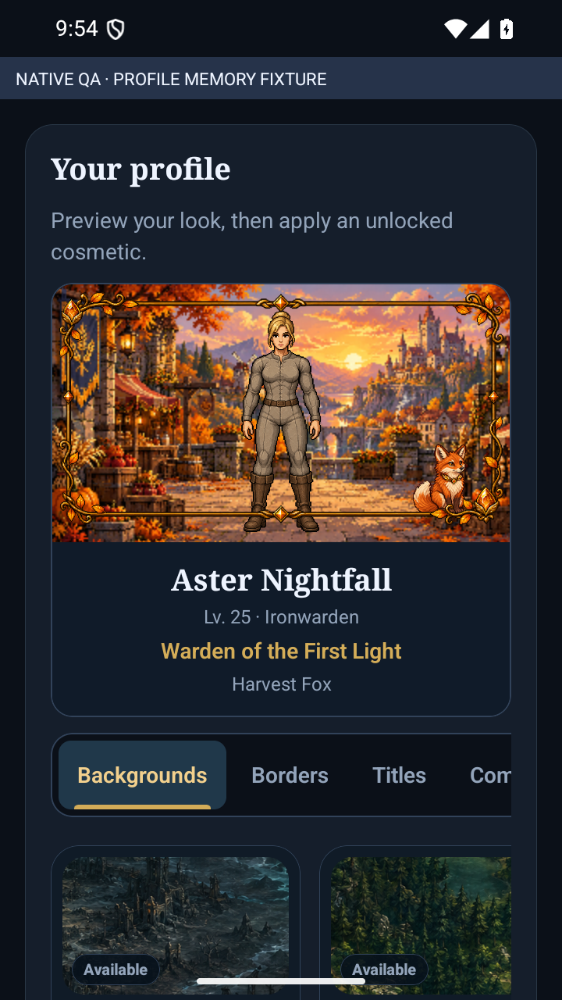
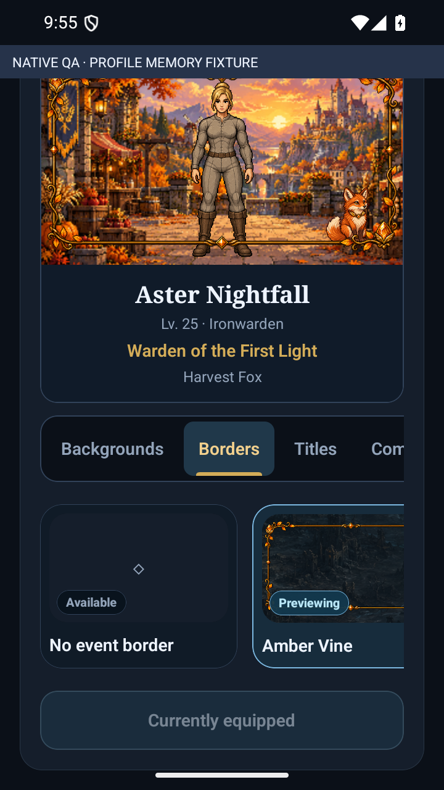
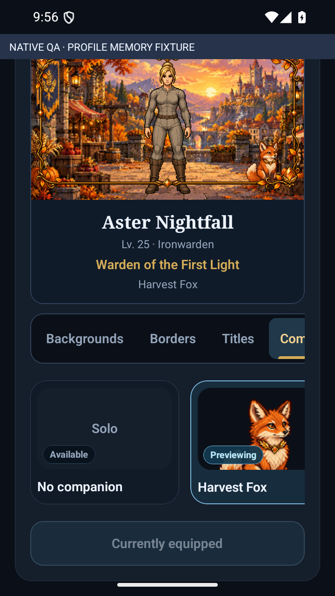

VELDRYN · Profile wardrobe
Softer cosmetic tiles, contextual event-border previews, clear status badges, and the complete profile composition. Actual Android captures using a memory-only fixture.
Implementation and verification · Integration specification

Profile scene and background wardrobe
Corrected border preview and selected state
Companion preview and shared status treatment